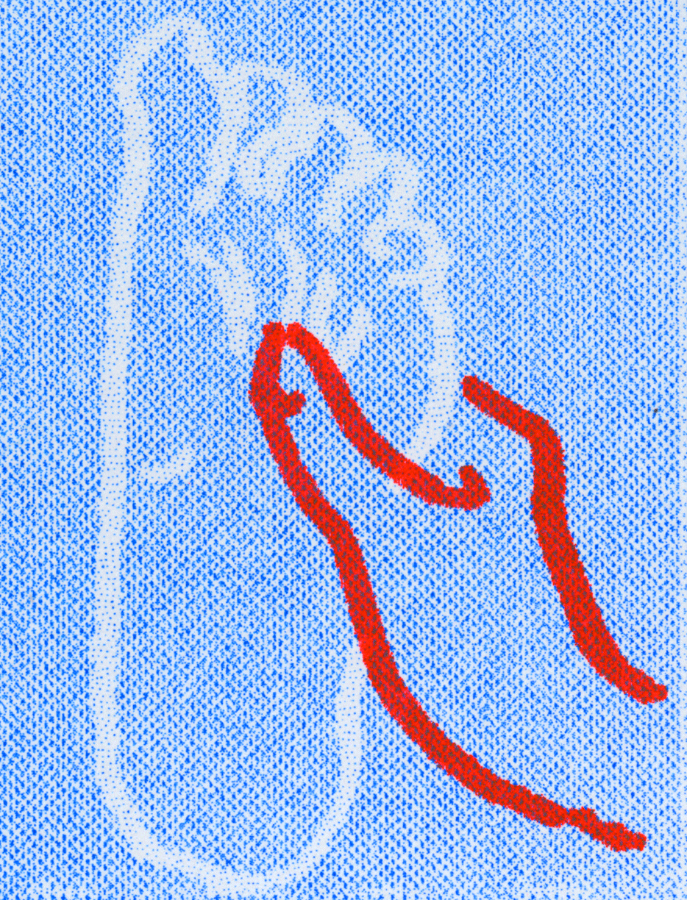

8x11 in print. A Risograph tribute to my reflexology socks and the power of acupressure, touch, and vulnerability. An experiment in layering physical and digital media that build upon each other: a pencil drawing becomes a scan becomes a Risograph print becomes a digital animation.
